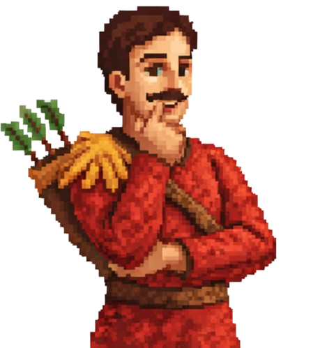
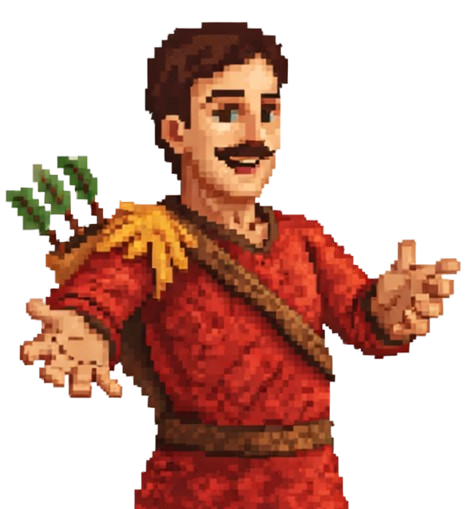

Quick access to the games
Go directly to game 1
Go directly to game 2
Go directly to game 3
Go directly to game 4
Go directly to game 5
Watch the end cinematic

William Tell
Start
William Tell
Continue to game 2

William Tell
Continue to game 3
William Tell
Continue to game 4
William Tell
Continue to game 5
William Tell
End the adventure
Head to the next game